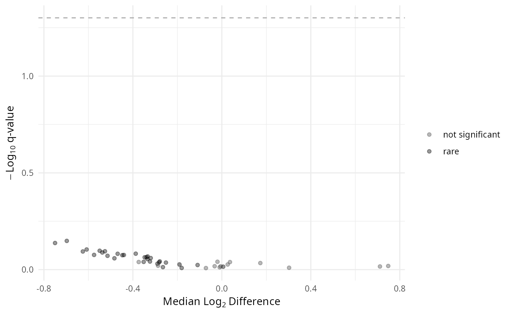
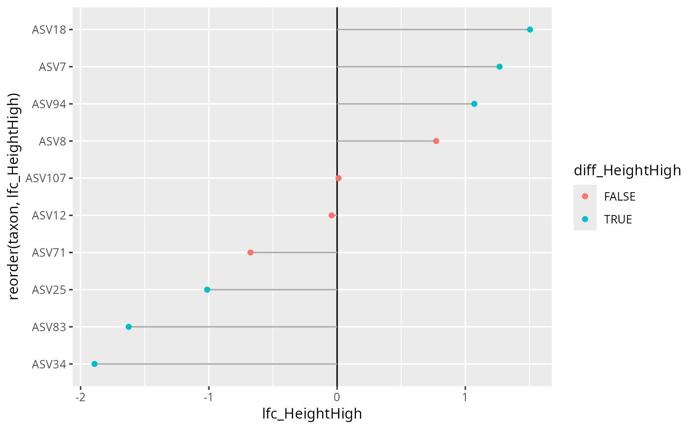

Simulate microbiome data with differential abundance using MIDASim
Source:R/fake_creation.R
midasim_pq.RdUses the MIDASim package to generate realistic simulated microbiome count data with known differential abundance effects. The function learns the structure (taxon correlations, sparsity patterns, library size distribution) from a template phyloseq object and generates new data with specified DA taxa.
Usage
midasim_pq(
physeq,
fact,
condition,
n_samples = NULL,
prop_case = 0.5,
n_da_taxa = 10,
effect_size = 1,
da_taxa_idx = NULL,
min_prevalence = 0.1,
mode = c("nonparametric", "parametric"),
seed = NULL,
verbose = TRUE
)Arguments
- physeq
(phyloseq, required) A phyloseq object to use as template. MIDASim will learn taxon-taxon correlations and abundance distributions from this data.
- fact
(character, required) Column name in
sample_datadefining the binary factor for DA simulation.- condition
(character, required) The level of
factwhere taxa should be differentially abundant (case group).- n_samples
(integer, default NULL) Number of samples to simulate. If NULL, uses the same number as the template.
- prop_case
(numeric, default 0.5) Proportion of simulated samples that belong to the case group (where DA taxa are elevated).
- n_da_taxa
(integer, default 10) Number of taxa to make differentially abundant.
- effect_size
(numeric, default 1) Log-fold change for DA taxa in case samples. Positive values increase abundance; negative decrease. Typical values: 0.5-2 for moderate effects.
- da_taxa_idx
(integer vector, default NULL) Specific taxon indices to make DA. If NULL, randomly selects
n_da_taxafrom prevalent taxa.- min_prevalence
(numeric, default 0.1) Minimum prevalence for a taxon to be eligible for DA selection.
- mode
(character, default "nonparametric") MIDASim mode. One of "nonparametric" (more realistic) or "parametric" (more controllable).
- seed
(integer, default NULL) Random seed for reproducibility.
- verbose
(logical, default FALSE) Print progress messages.
Value
A phyloseq object with simulated counts. The object includes:
Simulated OTU table with DA effects
Tax table from template (taxa are preserved)
New sample_data with binary factor column
Attributes:
da_taxa_idx(indices),da_taxa_names(names),effect_size,condition
Details
#TODO : NOT WORKING with aldex2
The simulation workflow follows MIDASim's three-step process:
Setup:
MIDASim.setup()learns the template's taxon abundance distributions, sparsity patterns, and taxon-taxon correlations.Modify:
MIDASim.modify()introduces DA effects by creating sample-specific relative abundances. For case samples (wherefact == condition), selected taxa are multiplied byexp(effect_size), then renormalized to sum to 1.Simulate:
MIDASim()generates realistic count data preserving the template's correlation structure.
This approach is superior to simple count multiplication because:
Taxon-taxon correlations are preserved
Sparsity patterns are realistic
Library sizes follow realistic distributions
The DA signal is embedded in the data generation process
References
He M, et al. (2024). MIDASim: a fast and simple simulator for realistic microbiome data. Microbiome. doi:10.1186/s40168-024-01822-z
Examples
# Requires MIDASim package
# install.packages("MIDASim")
# Simulate data with 10 DA taxa having log-fold change of 2
sim_pq <- midasim_pq(
data_fungi_mini,
fact = "Height",
condition = "High",
n_da_taxa = 10,
effect_size = 2,
seed = 42
)
#> Taxa are now in columns.
#> Template: 137 samples, 45 taxa
#> Simulating: 137 samples
#> Running MIDASim.setup (mode = nonparametric)...
#> The number of samples is larger than the number of taxa, please make sure rows are samples
#> Warning: Only 9 taxa meet prevalence threshold. Using all eligible taxa.
#> Selected 9 DA taxa
#> Running MIDASim.modify...
#> Running MIDASim...
#> Done. Simulated 137 samples with 9 DA taxa (effect = 2)
# Test with ALDEx2
sim_pq@sam_data$Height <-
as.character(sim_pq@sam_data$Height)
res <- MiscMetabar::aldex_pq(
sim_pq,
bifactor = "Height",
modalities = c("Low", "High")
)
#> Taxa are now in rows.
#> aldex.clr: generating Monte-Carlo instances and clr values
#> conditions vector supplied
#> operating in serial mode
#> aldex.scaleSim: adjusting samples to reflect scale uncertainty.
#> aldex.ttest: doing t-test
#> aldex.effect: calculating effect sizes
gg_aldex_plot(res, type = "volcano")

# Check which taxa were set as DA
attr(sim_pq, "da_taxa_names")
#> [1] "ASV7" "ASV8" "ASV12" "ASV18" "ASV25" "ASV34" "ASV71" "ASV83" "ASV94"
res_height <- ancombc_pq(
sim_pq,
fact = "Height",
levels_fact = c("Low", "High"),
verbose = TRUE, tax_level = NULL
)
#> Checking the input data type ...
#> The input data is of type: TreeSummarizedExperiment
#> PASS
#> Checking the sample metadata ...
#> The specified variables in the formula: Height
#> The available variables in the sample metadata: Height
#> PASS
#> Checking other arguments ...
#> The number of groups of interest is: 2
#> Warning: The group variable has < 3 categories
#> The multi-group comparisons (global/pairwise/dunnet/trend) will be deactivated
#> The sample size per group is: Low = 69, High = 68
#> PASS
#> Warning: The number of taxa used for estimating sample-specific biases is: 10
#> A large number of taxa (>50) is required for the consistent estimation of biases
#> Obtaining initial estimates ...
#> Estimating sample-specific biases ...
#> Warning: Estimation of sampling fractions failed for the following samples:
#> sim_sample_5, sim_sample_21, sim_sample_24, sim_sample_26, sim_sample_34, sim_sample_38, sim_sample_44, sim_sample_48, sim_sample_54, sim_sample_68, sim_sample_72, sim_sample_81, sim_sample_100, sim_sample_101, sim_sample_106, sim_sample_112, sim_sample_117, sim_sample_130
#> These samples may have an excessive number of zero values
#> ANCOM-BC2 primary results ...
#> Conducting sensitivity analysis for pseudo-count addition to 0s ...
#> For taxa that are significant but do not pass the sensitivity analysis,
#> they are marked in the 'passed_ss' column and will be treated as non-significant in the 'diff_robust' column.
#> For detailed instructions on performing sensitivity analysis, please refer to the package vignette.
ggplot(
res_height$res,
aes(
y = reorder(taxon, lfc_HeightHigh),
x = lfc_HeightHigh,
color = diff_HeightHigh
)
) +
geom_vline(xintercept = 0) +
geom_segment(aes(
xend = 0, y = reorder(taxon, lfc_HeightHigh),
yend = reorder(taxon, lfc_HeightHigh)
), color = "darkgrey") +
geom_point()
